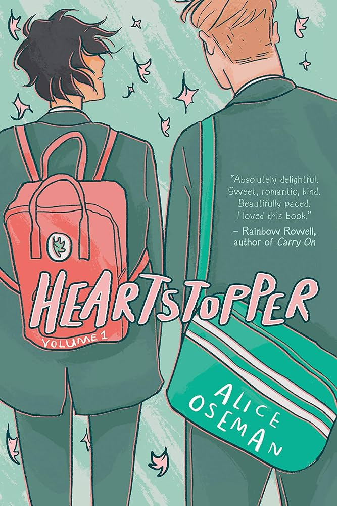

Uma história leve, fofa e muito envolvente, que acompanha o início da relação entre Charlie e Nick, dois garotos de mundos diferentes. A narrativa mistura momentos delicados com temas mais pesados, como bullying e relações tóxicas, mas se destaca pela sensibilidade ao retratar o primeiro amor e as descobertas pessoais. É uma leitura rápida, mas marcante, que deixa um carinho enorme pelos personagens e vontade de continuar.